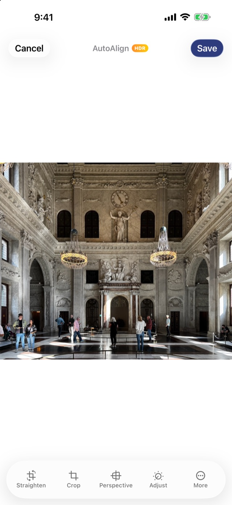
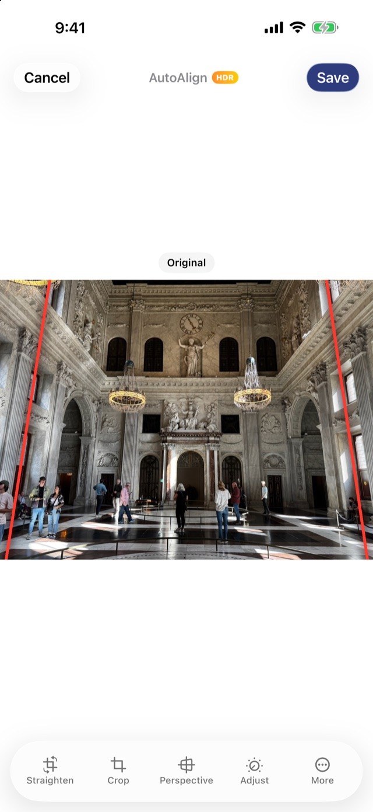
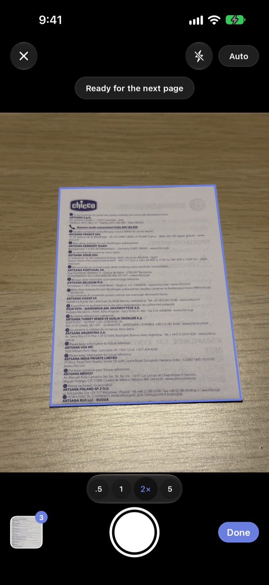
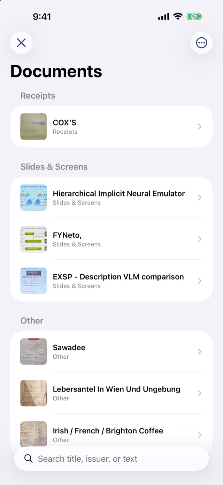
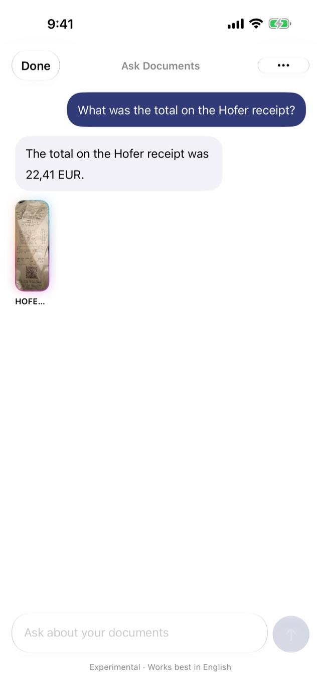
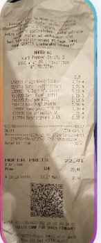
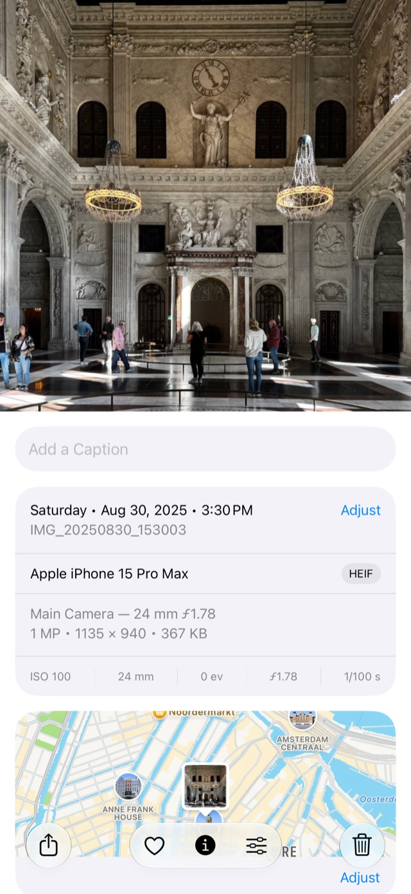
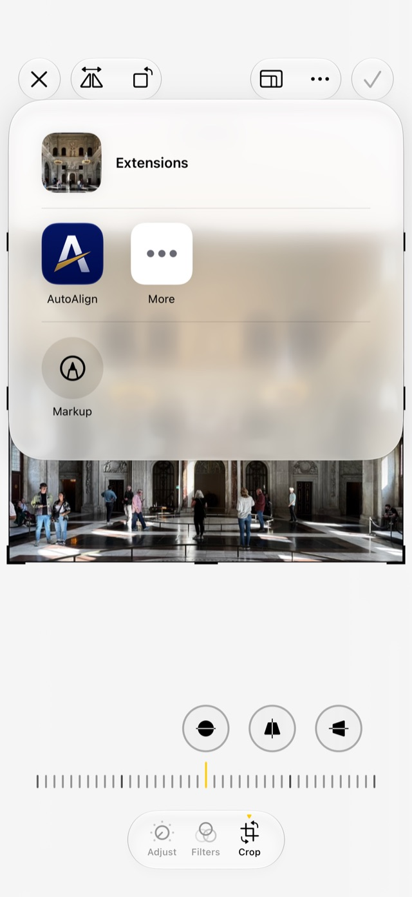
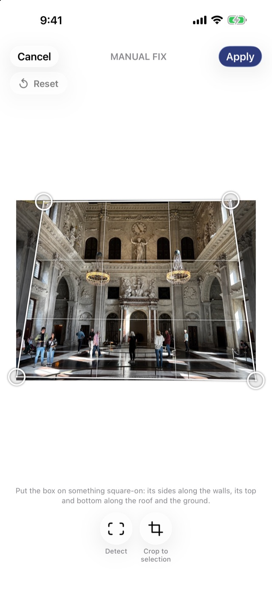
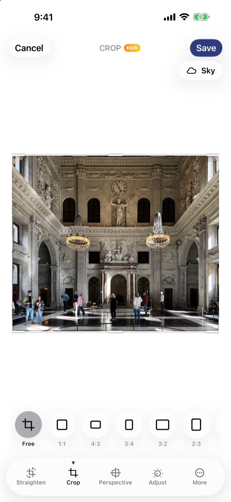

AutoAlign 4.0
Straight.
Automatically.
Leaning buildings, fixed in one tap. Your HDR, kept. And now your documents, scanned, filed and ready to answer questions.
Scroll to straighten
Real camera geometry.
Not a stretch.
AutoAlign works out the angle the photo was taken at and reverses it, so walls stand straight and proportions stay true. Skewed facades are squared too, and posters, billboards, whiteboards and artwork straighten like buildings.


Press and hold the phone to see the original
- StraightenAutomatic, full or vertical only. One tap.
- CropBuilt in, at full resolution. Trim sky and foreground if you want.
- PerspectiveKeep the empty corners, fill them, or cut them off.
- AdjustBrightness, contrast and saturation, new in 4.0.
New in 4.0
Now it keeps
your documents.
Receipts, letters, cards and slides. Scan them with the built-in camera, or add them from Photos and Files.
1 · SCAN
One shot per page.
AutoAlign finds the page as you point, and crops and straightens every page for you. Date, place and camera are kept on each one.

2 · FILED
Sorted before you ask.
Each document gets a title and lands in its category: receipts, bills, cards, notes, slides, letters, IDs. Make your own categories too, and share any document as a PDF.

3 · FOUND
Find it. Or just ask.
Search by any word on the page, who sent it, or where you scanned it, in the app or from your Home Screen. Or ask a question and get the answer with its document.

Ask Documents · experimental
Ask.
On your iPhone.
Ask about your documents in your own words. Apple Intelligence answers on the device and shows the document the answer came from. Nothing is sent anywhere.

Hofer receiptNeeds a device that supports Apple Intelligence, iOS 26 or later, with Apple Intelligence turned on. Works best in English.
How it works ›
Everything you'd
want to keep. Kept.
HDR, intact.
The gain map is corrected with the photo, so highlights and colour survive on an HDR display.
HDREXIF, GPS and date.
Camera settings, location and time stay on every photo and every scanned page.

Inside Photos.
Edit from the Photos app. No exporting, no duplicates, revert anytime.

Manual Fix.
Drag four corners onto anything and it flattens square.

Several at once.
Pick a set of photos and move between them with the strip under the photo.
Seven languages.
English, العربية, Deutsch, Español, Français, Nederlands, 简体中文.
No account.
No tracking, no analytics. Privacy ›
Take a closer look.

Know what it's for.
Great at
- Buildings, interiors, real estate, cityscapes and travel
- Posters, billboards, whiteboards and artwork shot at an angle
- Receipts, letters, cards and slides, scanned and filed
- Finding a document by any word on it, or where you scanned it
- Keeping HDR, EXIF, GPS and the original, always revertible
Not made for
- Recreating parts of a building cut out of the frame
- Extreme perspective beyond a certain limit
- Scenes with no straight edges, where Manual Fix does the job instead
- Ask Documents on devices without Apple Intelligence, or in Arabic, where the button isn't shown
- Syncing documents between your devices
Free to start.
Free
The full automatic correction, Manual Fix, cropping, and up to 4 documents. Exports carry a watermark, and photos save at reduced resolution.
Premium
Full-resolution and HDR export, no watermark, unlimited documents. Monthly, yearly, or a one-time purchase.